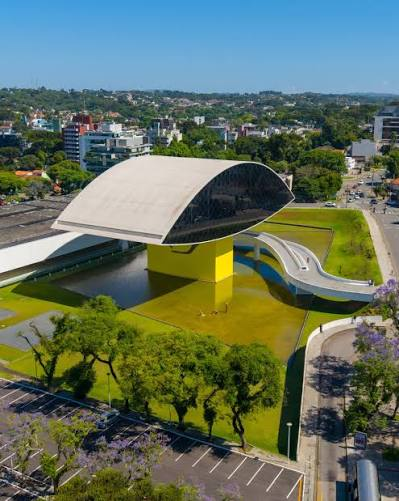
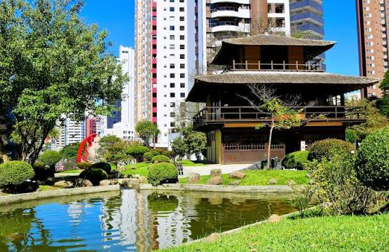
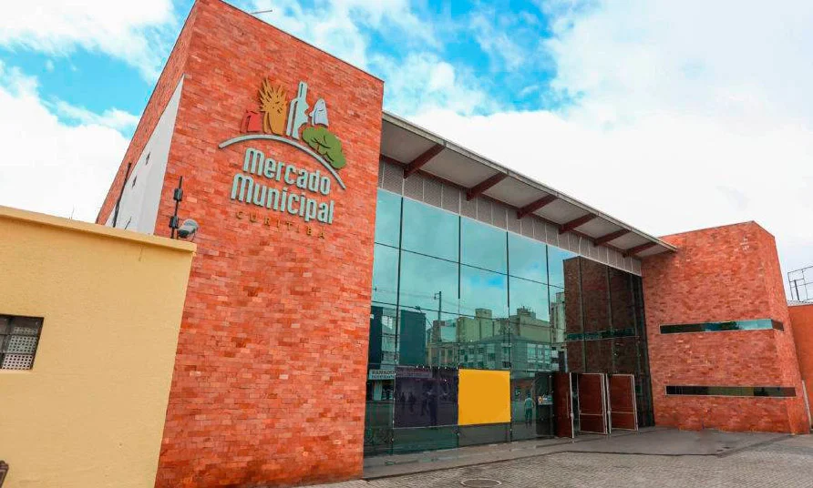
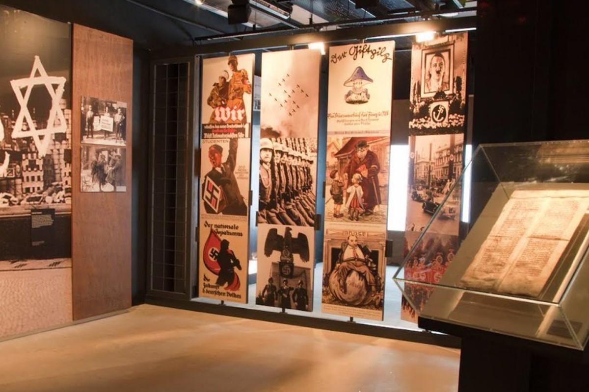
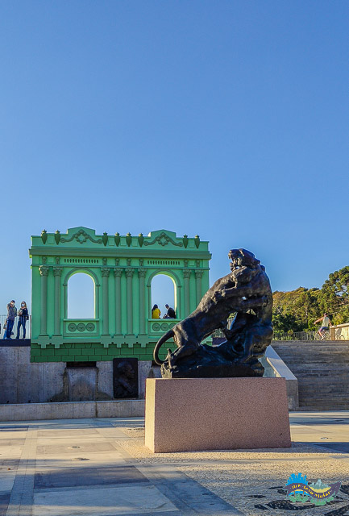

ARTE
Museu Oscar Niemeyer
Arte, arquitetura e design.
Descubra a arte, a história e as tradições que fazem parte da identidade de Curitiba.
Começar a explorar →
 DESTAQUE DE CURITIBA
DESTAQUE DE CURITIBA
Conhecido como Museu do Olho, é um dos espaços culturais mais famosos de Curitiba. Sua arquitetura marcante e suas exposições fazem dele uma visita especial.
Escolha uma categoria e descubra museus e memoriais da cidade.
6 locais encontrados

Arte, arquitetura e design.

Exposições e artistas.

História e memória do Paraná.

Educação, memória e direitos humanos.

Imigração e patrimônio cultural.

Arte e identidade paranaense.
Nenhum museu favoritado ainda.
Conheça mais sobre a cidade por meio de conteúdos multimídia.
Um passeio pela história, pela arte e pelos principais espaços culturais de Curitiba.
Uma apresentação sobre a diversidade e a formação cultural de Curitiba.
Os conteúdos são reproduzidos diretamente no navegador quando os arquivos de mídia estão disponíveis.
Além da cultura e dos museus, conheça os parques, os pontos turísticos e os sabores da nossa cidade.